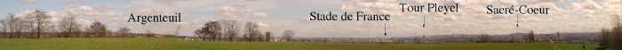
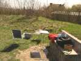
Le matin, il a plu, pas mal, même... Moi, je suis resté chez moi, mais les autres ont quand même pique-niqué sur le terrain, quel courage !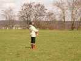
Quand j'arrive, Emmanuel est déjà reparti à l'assaut, dans le ciel qui s'est merveilleusement dégagé.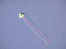
Il a d'abord mis en l'air le Conyne qu'il a gagné à Stella et qui restera en l'air toute la journée malgré quelques pirouettes...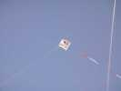
Mais il a aussi avec l'aide de sa moitié mis en l'air ses chats favoris, malgré le vent qui soufflait dur et turbulent, en haut de la colline, mais derrière les arbres...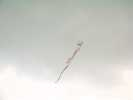
... et un autre chat, d'architecture plus originale...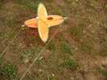
Il a aussi un certain nombre de bizzas comme ce machin rotatif qui vole comme un vrai cerf-volant (ah bon, c'en est un ?) de façon compréhensible seulement par les ingénieurs en aérodynamique dynamique...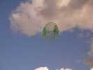
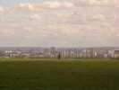
Mais nous ne sommes pas seuls, il y a aussi des cervolistes du cru qui malheureusement passent sans nous jeter un regard, comme ce pilotabliste...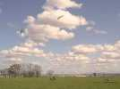
...ou des tractionnistes, avec une voile un peu petite pour bien s'éclater...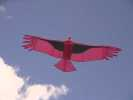
Moi, j'ai mis en l'air mon Condor, qui a fait son premier vol de durée notable ici...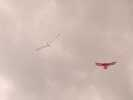
J'ai mis aussi mon Albatros 2 que je n'arriverai pas à régler stable dans ces turbulences, et que je remplacerai par l'Albatros premier, en confiant le Condor à mon fils qui est venu me prêter main-forte...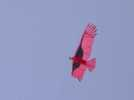
... et main forte il faut car avec ce vent, le Condor se courbe avec souplesse, mais les plumes tout en bataille...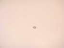
François a sorti son Delta Vapeur tout récent qui vole droit comme un I, mais très haut, au-dessus des bourrasques. Il tire des tonnes et ça sera dur de redescendre, poulie nécessaire bien sûr...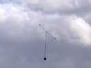
En fait, sa poulie est juste un mousqueton d'escalade avec une ceinture de sécurité qui permet d'avoir les mains libres pour bricoler. Comme ça, il pourra faire de la photo avec son appareil argentique qu'il faut réarmer à la main. Apparemment ça a marché, avec quelques doutes sur le bon déroulement de la première pelloche ! J'espère que les photos du moulin d'Orgemont seront bonnes, François, tu nous les feras voir ?